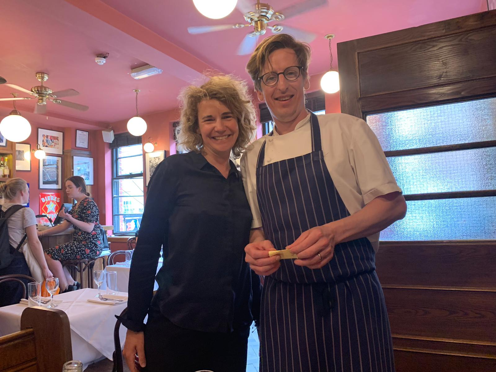

Could you think back to your training and tell me about your most enjoyable memory about other chefs and their kitchens?
It was when everyone was enjoying what their specific work and tasks were and that pleasure gets reflected back to the customer in the food.
Can you please choose one dish that was hard to learn or that did not translate between England and France or vice versa?
“Gargouillou”, which is a dish of young vegetables and herbs, can only be done in the Aubrac region. It is located in the department of Northern Averyron at the border with Cantal and Lozere in central France.
Can you remember a mistake in a recipe that turned out to be a great idea?
I wasn’t there when it happened but someone spilt muscovado sugar into a dry black olive mix and then it intentionally got used as an ingredient for all sorts of dishes. It was actually a successful combination.
Did you acquire any nicknames while you were training?
At the age of 14, my nickname was Birdie because I looked like a newborn bird whilst I
was
working at a local hotel’s kitchen in Falkirk in Scotland.
The second nickname was Nigel that I acquired at Amaryllis restaurant in Glasgow,
working
with David Dempsey, who was operating the restaurant for Gordon Ramsey in 2002. There
were
two Neil’s working in the kitchen and David had to differentiate between us.
L’Ecossais was acquired during my time working with Michel Bras at Laguiole in France at his restaurant Bras.
Could you mention one of your memories about David Dempsey who has since died?
I remember him asking me for a lift back to our flat where we lived because he had left the tap on and flooded the flat below us!
Was it your cooking that finally seduced Angela?
It was my personality! We got on really well when I worked for her at the Connaught Hotel. Then we decided to meet in Paris, which was where we got together. We went to l’Astrance, l’Assiette and we stayed at a hotel called Le Petit Palace which was far from a petit palace (LAUGHS). My boss at the time, Michel Bras, in France recommended it.
Angela is a combo of Welsh and Italian and you are Scottish, who cooks at home?
Either of us. When she cooks, I will do my carving of meat. LOL!!
 Photo of Neil and Agnes on the day of the interviewWhat made your will so strong to fight for your recovery after your bike accident in November 2012?
When you enjoy what you do so much, you spend your life with the people you cook with in the kitchen, and they become your family. I didn’t want to lose that family. I was terrified not to be able to cook as before. After the accident, I ran a half marathon.
I was so impressed to discover that you had to relearn the precision of your knife movements.
Yes I was lucky. In hindsight, I went back to The Square restaurant far too early but it was a safe environment for me to get back under the direction of Phil Howard.
Any dreams in particular while hospitalised?
I dreamt while I was in coma. It was about me and my best man. We were in America and we were at an ATM machine. We needed some cash as we were trying to bet on Europe to win the Ryder cup. The truth is that my friend never put money on the bet but Europe won. Stella McCartney was also in the dream as her shop on Burton Street is opposite The Square restaurant where I was working before the accident.
What is the strongest influence now at the French house?
Fergus Anderson who is a good friend and one of the most influential people in British cooking by a mile started this lovely institution. I was touched to be asked to be part of it. I think customers appreciate the delicious classical food and people value the consistent high standards we maintain.
What is your signature dish?
Calf brains, which is a typically traditional French dish, are elevated as we cook them in brown butter with capers and parsley. I love French food and I was lucky to be trained in France for three years by Michel Bras. It is important to get the dishes superbly prepped and then to surprise people by how simply they taste.
Can you suggest a wine pairing with the dish?
I would pair it with Crozes Hermitage Les Trois Chenes 2016 produced by Emmanuel Durand.
What is your favourite pudding?
Paris Brest is one of my favourites as I love cycling. Paris Brest is also a bike race: Paris to Brest and then back to Paris and that’s why the pudding is shaped as a cycle wheel.
What is your favourite kitchen utensil?
A chef always needs a good knife. I use a small pairing knife from Nontron in Perigord. The brand is one of the oldest artisanal knives in France.
Name an ingredient you can’t live without?
Butter. The more I cook here at the French house, the more we use it.

Where do you travel to get inspiration for your food?
From a very young age, I took inspiration from France and their respect for l’art de la table. The French have a different mentality. Even on busy roads in France you can eat very well at a routier restaurant and drink a good bottle of wine. Angela and I try to travel when we have some time off and experience different cuisines.
What is the most memorable culinary moment you ever experienced?
I would say at the Connaught under the direction of Angela Hartnett, we used to do a crab and scallop mousse, wrapped in celeriac cannelloni. It is a Scottish crab mousse with a Celeriac remoulade. The head chef Neil Ferguson was fantastic and worked at L’Arpege and at L’Esperance with Marc Meneau, who was very good at sharing his knowledge. He was generous. At The Square under the supervision of Phil Howard, it was called the crab lasagne It was a similar mix with crab, scallop, and with a langoustine bisque foam layered in parsley pasta sheets like a lasagne. In France, I experienced le vin jaune sauce (from Arbois or La Part des Anges) which is so peculiar and rare and that Michel Bras used in his cooking. He was also a pioneer by being the first one to create fondant au chocolat in 1981. Bras also initiated me with the Black truffle butter, using truffles from Comprégnac, served with a cote de boeuf, which was delicious combination.
Are you a chopsticks or knife and fork or hands person?
I am chopsticks and hands person.
What would be your last meal before going to heaven?
As a starter, I would go with Crab lasagne and for my main a ribeye beef with super ripe
tomato salad.
Pudding would be chocolate mousse and the wine a Cornas from the Rhone Valley, Les
Chaillets 2015 by Alain Voge.
What do you do to chill when you go home?
I watch a bit of cycling either Paris – Roubaix or Tour de France. If I weren’t a chef, I would have been a cyclist.
What is your motto?
Always think of others before yourself.
For any newcomers in the kitchen, what are your wisest words of wisdom?
It is a fantastic job but it is a lifestyle as well. To illustrate that point, most of our friends at our wedding apart from the family were from the industry. Be prepared to work hard. You’ll meet some fantastic people and you should aim to have fun and enjoy it. If you don’t enjoy it, then don’t do it.